U R Rao Satellite Centre, ISRO · August 2019–July 2024
Spacecraft Autonomy & Guidance, Navigation and Control (GNC)
Five years as a GNC scientist working across more than ten space missions, from lunar powered descent and human-spaceflight systems to solar-observation and Earth-observation spacecraft.
My work covered flight-algorithm development, nonlinear spacecraft dynamics, control design, Monte Carlo analysis, onboard decision logic, high-fidelity simulation, and stability assessment. Chandrayaan-3 was a major focus: I contributed to the GNC analysis behind its autonomous powered descent and developed methods and analyses for guidance feasibility, real-time retargeting, landing strategy, and propellant-slosh interaction.

Chandrayaan-3 Moon Landing
Chandrayaan-3 demonstrated autonomous safe and soft landing near the lunar south-polar region on 23 August 2023. The U R Rao Satellite Centre team designed, analyzed, implemented, and realized the powered-descent GNC system that brought the lander from orbital velocity to touchdown.
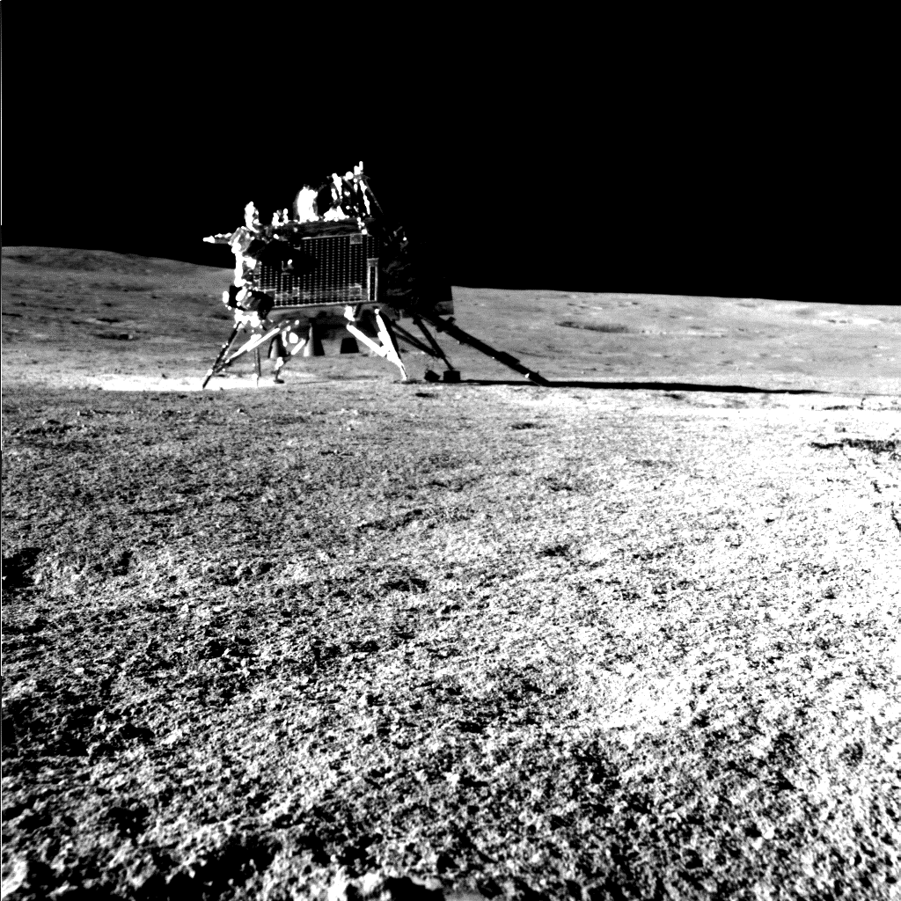
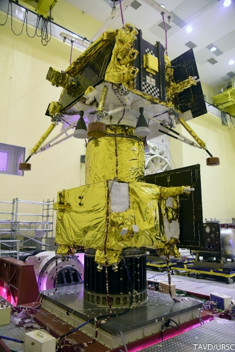
The descent was deliberately staged: rough braking removed most of the approximately 1.68 km/s horizontal velocity, attitude hold prepared the sensor and propulsion geometry, fine braking drove the state toward the terminal corridor, and terminal descent completed hazard-aware vertical landing. Each phase balanced thrust and attitude limits, navigation accuracy, guidance convergence, failure tolerance, and propellant use.
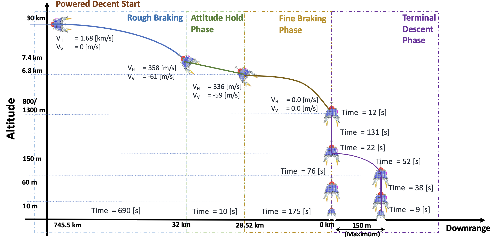
Why the landing problem was hard
The lander had to autonomously absorb navigation error, thrust dispersion, mass uncertainty, actuator constraints, and late absolute-navigation updates. Under a sufficiently large state shift, the nominal target could become unreachable even though a safe landing remained possible at a nearby site.
That motivated a lightweight onboard answer to two questions: Is pinpoint landing still feasible? If not, what nearby target remains controllable? The resulting framework combined offline high-fidelity simulation with analytical onboard evaluation and target retargeting.
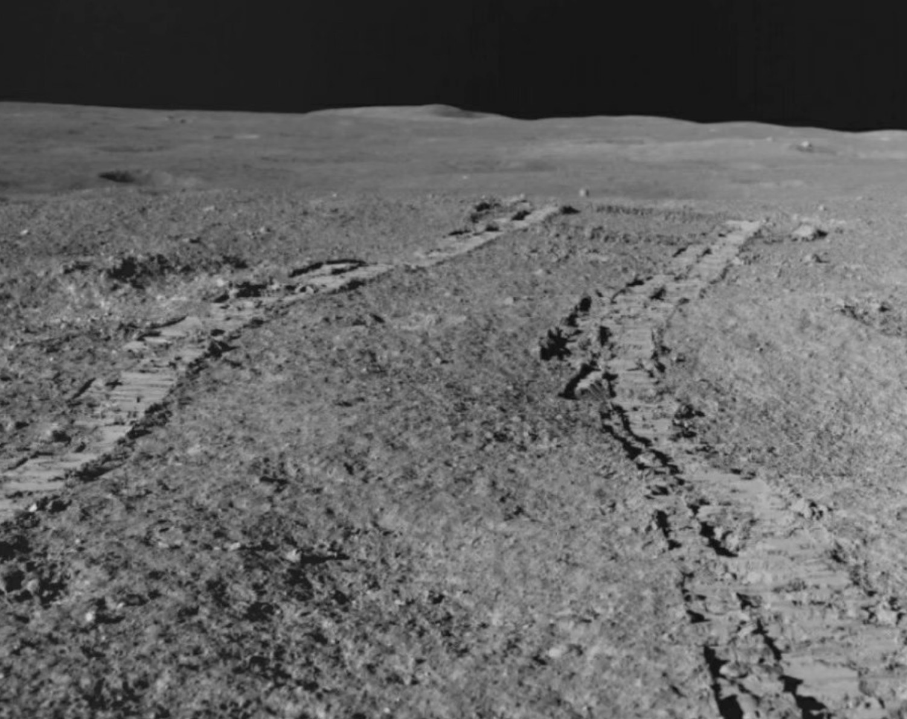
From Powered-Descent GNC to Real-Time Retargeting
One of the most critical phases of Chandrayaan-3 powered descent was fine braking. Using the navigation state updated during the preceding attitude-hold phase, fine-braking guidance had to bring the lander over the selected landing site at the prescribed altitude, with near-zero horizontal and vertical velocity and in the vertical orientation required for the subsequent hovering and terminal-descent phases. However, either large propulsion dispersion accumulated during rough braking or a significant state correction from the attitude-hold sensor update could place the lander at a fine-braking initial state from which the nominal guidance law could no longer reach the selected site while satisfying its constraints.
To handle this rough-braking-induced state dispersion without replacing the nominal analytical guidance (G1), we added robustness in two layers. G2 computes time-to-go onboard from the updated fine-braking state, increasing the range of dispersed states that can still reach the nominal site. If no feasible time-to-go can recover that site, G3 shifts the target to a nearby reachable location for a safe, soft landing.
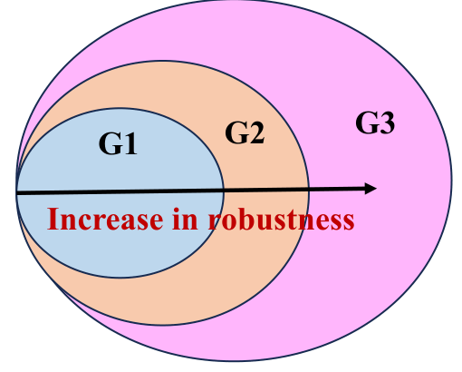
G2 · Increase robustness with time-to-go
The appropriate time-to-go depends on the actual state at fine-braking start. Offline, candidate values are simulated for dispersed initial states; only converged, constraint-satisfying trajectories are retained, and the value with maximum terminal mass is selected. A compact state-to-time-to-go map then evaluates this logic onboard in real time.
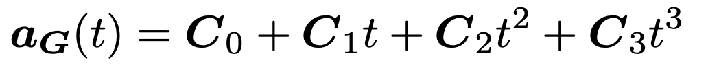
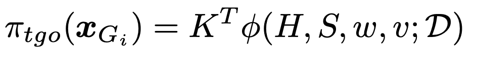
Why is retargeting still needed?
Time-to-go adaptation makes nominal guidance more robust, but a sufficiently large navigation update or propulsion error can still make the nominated site unreachable. The lander must then recognize the loss of feasibility and select a nearby safe target.
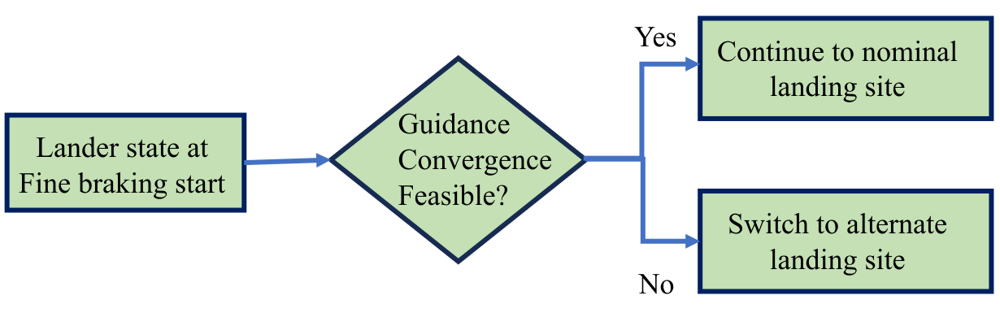
G3 · Check feasibility and retarget
Our key innovation was an offline-learned maximum-margin classifier separating controllable and uncontrollable states, followed by a conservative zero-loss correction so that an uncontrollable state is not declared safe. Onboard feasibility checking then reduces to evaluating this compact boundary.
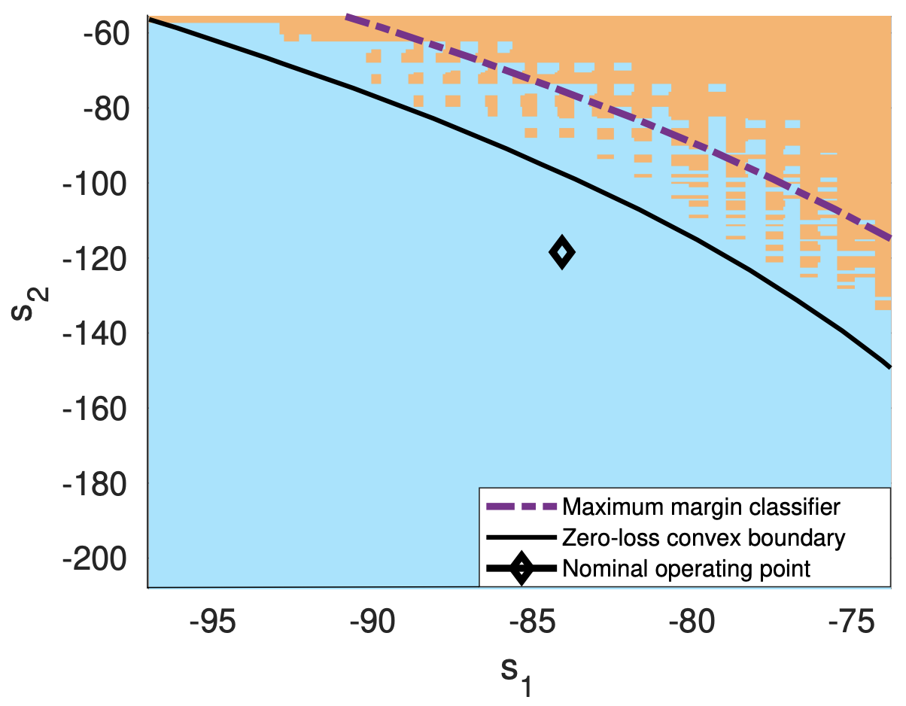
If the current state is outside the feasible region, the landing target is shifted to the nearest point on the boundary. The lander then reuses the same analytical guidance law, avoiding heavy online trajectory optimization.
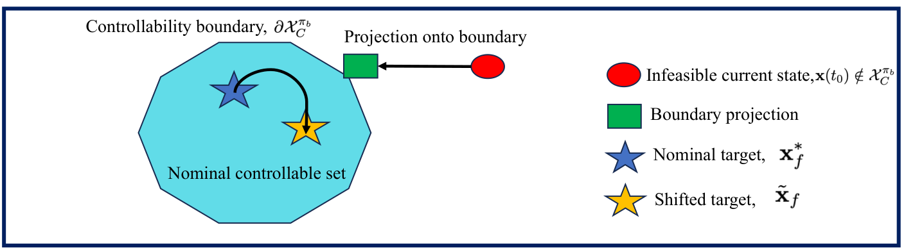
The method was validated with high-fidelity simulation, Monte Carlo campaigns, and flight telemetry; Chandrayaan-3 remained within the preflight fine-braking performance envelope.
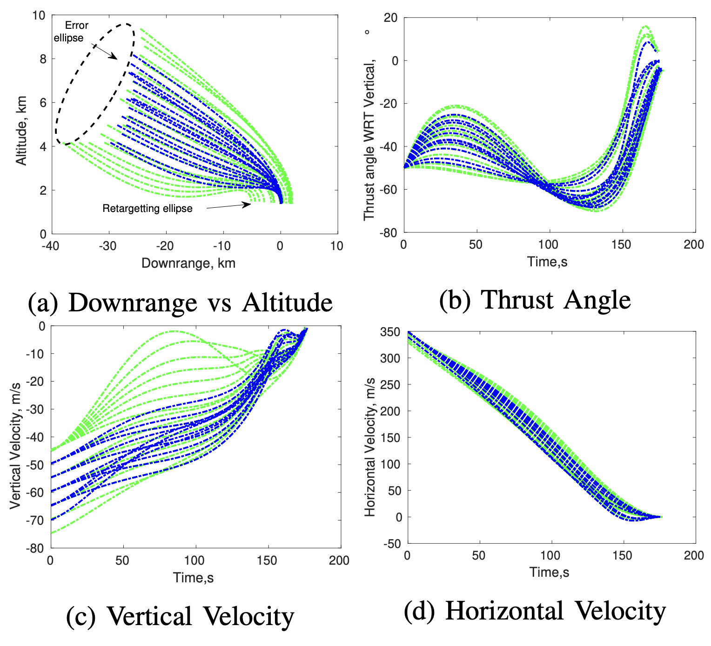
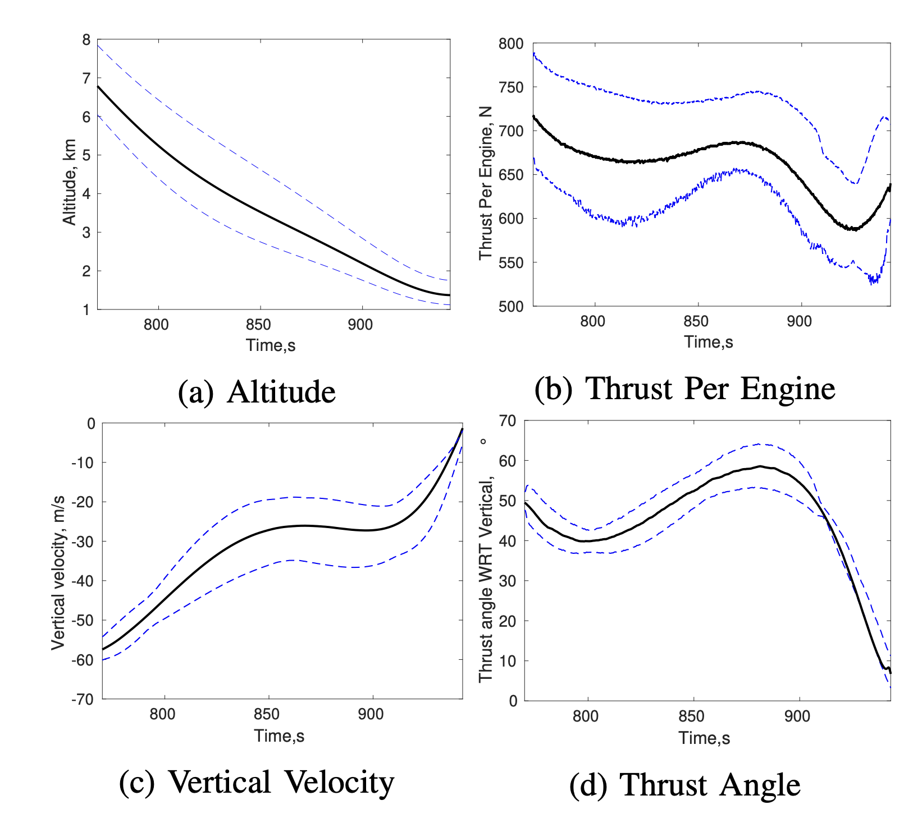
Propellant Slosh Modeling and Control Stability
Propellant slosh is the oscillatory motion of liquid propellant relative to its partially filled tank. During powered descent, high lander acceleration and lateral thrust from the liquid-propellant thrusters excite these modes. The moving propellant then generates disturbance forces and torques that couple directly into attitude control.
I contributed to developing a nonlinear three-axis, multi-tank slosh model in which each dominant liquid mode is represented by a time-varying equivalent pendulum. As propellant is consumed, the model updates slosh frequency, damping, center of gravity, and spacecraft inertia, and maps the pendulum motion into disturbance forces and torques on the rigid body.
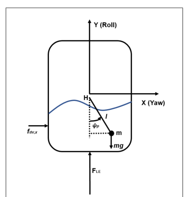
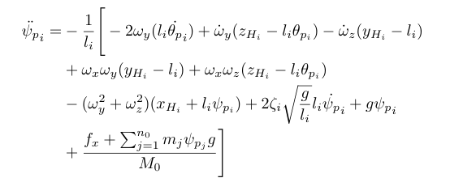
1. Linear, frozen-time stability analysis
The lander changes continuously as propellant is consumed, so one fixed stability model is not enough. We linearized the dynamics at many moments during descent and checked each snapshot. This showed when slosh was most likely to amplify attitude motion or reduce control stability.
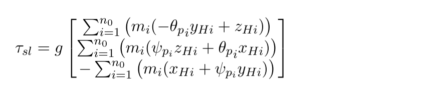
2. Nonlinear thruster actuation
The flight attitude controller does not apply continuous torque directly. A pulse-width pulse-frequency modulator (PWPFM), containing a dynamic filter and hysteresis, converts the command into on–off pulses for the Reaction Control System (RCS) thrusters. Its switching nonlinearity can create amplitude-dependent behavior and limit cycles that a purely linear model cannot predict.
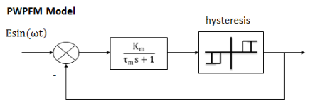
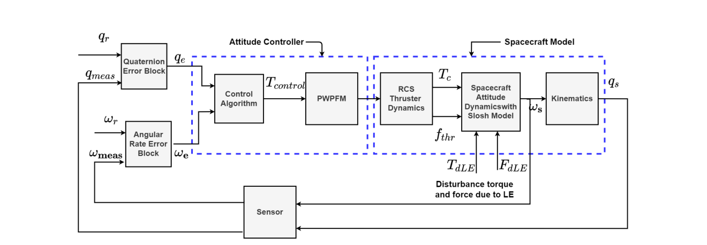
3. Describing-function and nonlinear Nyquist analysis
The PWPFM was represented by an amplitude- and frequency-dependent describing function and combined with the linear slosh-coupled plant. Extended Nyquist analysis then distinguished stable operation, bounded limit cycles, and instability near the slosh frequency. High-fidelity time-domain simulations were used to verify the predicted behavior.
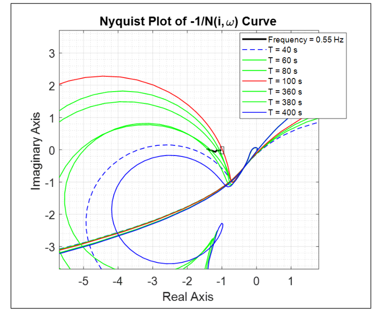
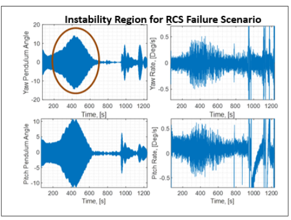
Broader Mission Portfolio
Beyond Chandrayaan-3, my five years at ISRO included GNC, attitude-control, dynamics, simulation, and mission-analysis contributions across more than ten missions spanning interplanetary, geostationary, human-spaceflight, and Earth-observation programs. Representative missions include Aditya-L1, India’s solar-observation mission; Gaganyaan, India’s human-spaceflight program; and INS-2B, an Earth-observation nanosatellite for which I served as Attitude and Orbit Control System (AOCS) project manager, responsible for AOCS design and development, flight algorithms, and hardware testing.
Chandrayaan-3
Powered-descent GNC, feasibility and retargeting, simulation, and slosh/control analysis.
INS-2B Nanosatellite
AOCS project manager responsible for system design and development, flight algorithms, and hardware testing.
Reports and Publications
- Debajyoti Chakrabarti. Applications of Convex Optimization, ISRO internship report, 2018.
- Debajyoti Chakrabarti, Suraj Kumar, Aditya Rallapalli, M. P. Rijesh, and G. V. P. Bharat Kumar. “Convex Decision Boundary Design for Guidance Feasibility Check During Powered Descent Phase of Chandrayaan-3 Lander,” IFAC-PapersOnLine, 2024.
- Suraj Kumar*, Debajyoti Chakrabarti*, Aditya Rallapalli, and G. V. P. Bharat Kumar. “Real-Time Retargeting-Based Robust Polynomial Guidance for Chandrayaan-3 Lunar Landing Mission,” Journal of Guidance, Control, and Dynamics, 2026.
- Suraj Kumar*, Debajyoti Chakrabarti*, Aditya Rallapalli, G. V. P. Bharat Kumar, and Ashok Kumar Kakula. “Real-Time Retargeting Using Controllability Boundary for Chandrayaan-3 Lunar Landing,” American Control Conference, 2026.
- Aditya Rallapalli, Suraj Kumar, G. V. P. Bharat Kumar, Chiranjib Guha Majumder, Debajyoti Chakrabarti, and M. P. Rijesh. “Landing Profile and Powered Descent Strategy for Chandrayaan-3,” 2024.
- Nivriti Priyadarshini, Debajyoti Chakrabarti, and Yajur Kumar. “Modelling of Propellant Slosh Dynamics and Its Application in Control Stability Study of Lunar Landing Mission,” AAS 22-651, 2022.
- Aditya Rallapalli, Debajyoti Chakrabarti, Nivriti Priyadarshini, M. P. Rijesh, and G. V. P. Bharat Kumar. “Stability Analysis Using Describing Function for Non-Linear Attitude Control Loop with Slosh Dynamics of Chandrayaan-3 Landing Mission,” Indian Control Conference, 2024.
* Equal contribution.